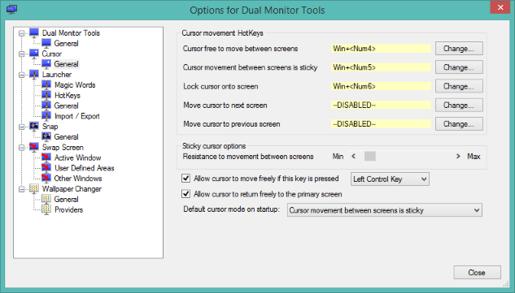

DMT Cursor
DMT Cursor
Control movement of cursor between monitors. The cursor can be locked to a monitor or made sticky, so extra effort is required to move it between monitors.
'Cursor' options
These options allow you to control how the cursor moves between the screens.
The cursor can be in one of three modes:
- Free - the cursor is free to move unhindered between screens
- Sticky - there is resistance to moving the cursor between screens
- Locked - the cursor is locked onto a single screen
Cursor free to move between screens
This will return cursor movement to the default state where the cursor is allowed to move freely between the screens.
If the hotkey for this option is left as disabled, then the hotkeys for Cursor movement between screens is sticky and Lock cursor onto screen work as toggle keys. If this hotkey is defined, then the sticky and lock hotkeys do not toggle.
Cursor movement between screens is sticky
The cursor is allowed to move between screens, but there is some resistance to moving between the screens. You can adjust the resistance using the Resistance to movement between screens slider.
This locks the cursor onto the screen and may not move off the screen no matter how much you move the mouse.
To move the cursor to another screen, you would have to switch to another mode, or use one of the options below.
This will move the cursor to the next screen.
Move cursor to previous screen
This will move the cursor to the previous screen.
Resistance to movement between screens
This slider controls the resistance to moving the cursor between screens when in Sticky mode.
This effectively controls the extra distance that the mouse must move before it is allowed to move to the next screen.
Allow cursor to move freely if this key is pressed
If this is checked, then regardless of mode, you can freely move the cursor between screens while the selected key is pressed. Any one of the Control or Shift keys (left or right) may be chosen.
Allow cursor to return freely to the primary screen
If this is checked, then regardless of mode, you can freely move the cursor over a screen boundary if the cursor is being moved onto the primary screen.
Default cursor mode on startup
Allows the cursor mode to be automatically set when DMT starts.